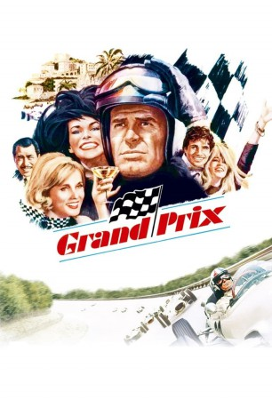

IMDB-Wertung: 7.2 / 10
IMDB-Wertung: 7.2 / 10  Tomatometer: 100
Tomatometer: 100  Metascore:
Metascore: 
Im Kampf um die Weltmeisterschaft kann es nur einen Champion geben. Bei atemberaubendem Tempo wollen vier Formel-1-Piloten herausfinden, wer der Beste ist
 IMDB-Wertung: 7.2 / 10 Tomatometer: 100 Metascore:
Im Kampf um die Weltmeisterschaft kann es nur einen Champion geben. Bei atemberaubendem Tempo wollen vier Formel-1-Piloten herausfinden, wer der Beste ist
Jahr: 1966
Dauer: 175 Minuten
FSK: 12
Land: USA Studio: MGMTonspuren: DD1.0 - ,
Untertitel:
Auflösung: 1080p (1920x872) Größe: 9113 MB
Regisseur:  John Frankenheimer
John Frankenheimer
Drehbuch: Robert Alan Aurthur
Soundtrack: Maurice Jarre
Darsteller:
 James Garner als Pete Aron
James Garner als Pete Aron Eva Marie Saint als Louise Frederickson
Eva Marie Saint als Louise Frederickson Yves Montand als Jean-Pierre Sarti
Yves Montand als Jean-Pierre Sarti Toshirô Mifune als Izo Yamura
Toshirô Mifune als Izo Yamura Adolfo Celi als Agostini Manetta
Adolfo Celi als Agostini Manetta Jack Watson als Jeff Jordan
Jack Watson als Jeff Jordan Donald O'Brien als Wallace Bennett
Donald O'Brien als Wallace Bennett Salvatore Billa als Policeman (uncredited)
Salvatore Billa als Policeman (uncredited) Paul Frees als Izo Yamura (uncredited)
Paul Frees als Izo Yamura (uncredited) Enzo Fiermonte als Guido
Enzo Fiermonte als GuidoDatei: X:\1966\Grand Prix (1966, FSK12, 1920x872).mkv seit 16.02.2018
Festplatte: HD 1900-1970
 Es gibt insgesamt 27 Filme in der Gruppe '1966'
Es gibt insgesamt 27 Filme in der Gruppe '1966'